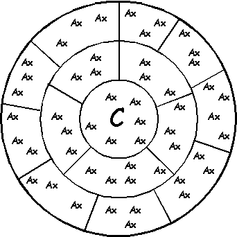

Using Relevance

Clustering
Treat each formula as a vertex in a graph
Add edges weighted with transitive relevance
Build maximal cliques in graph
Initially seeded from conjecture
Edges must have minimal specified relevance
Vertices must have limited range of relevance to conjecture
Each clique is a cluster of closely related formulae, with similar relevance to conjecture
Combinations
Set cluster relevance to average of axioms' relevances to conjecture
Use combinations of clusters in
increasing
order of probability:
Π(clurel(Cl)) * Π(1-clurel(Cl)) Cl∈Comb Cl∉Comb
Evaluation
In progress
Cluster Paths (the future)
Treat each cluster as a vertex in a graph
Add edges weited with inter-cluster relevance
Require use of strong paths